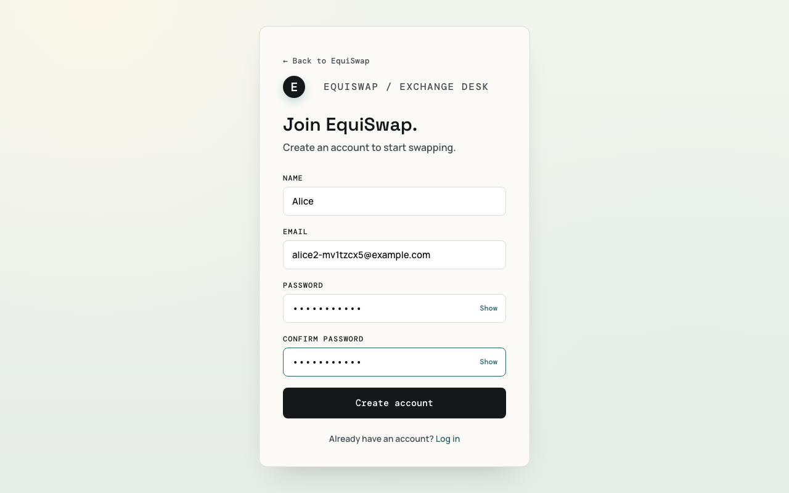
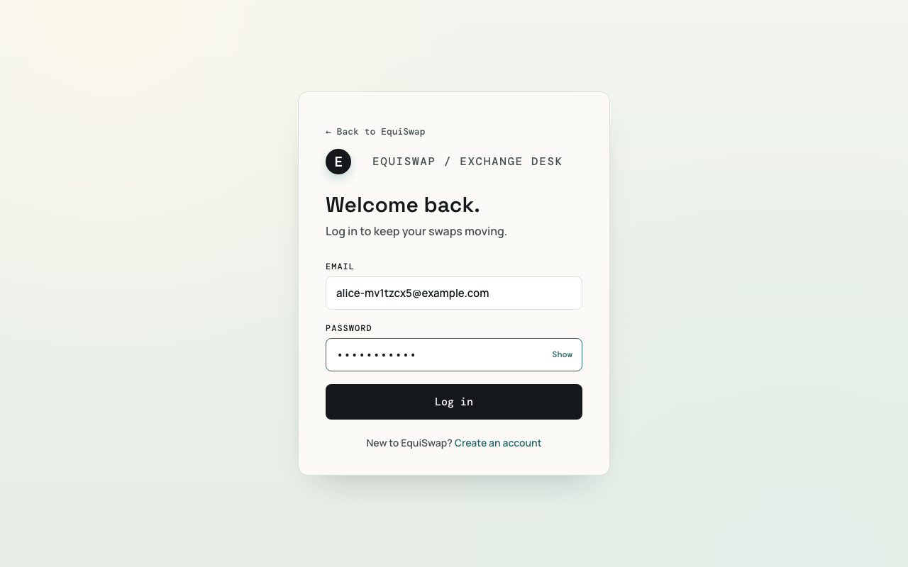
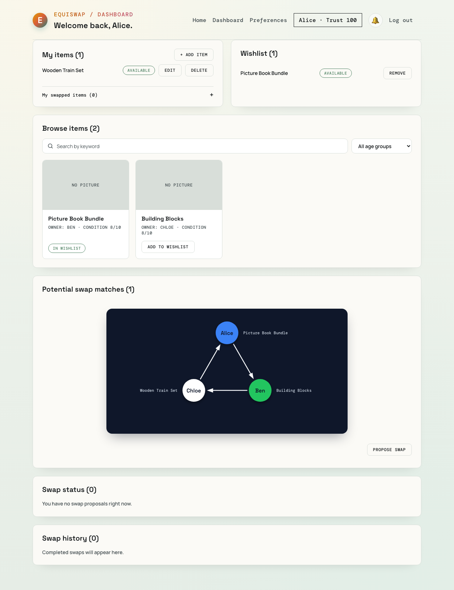
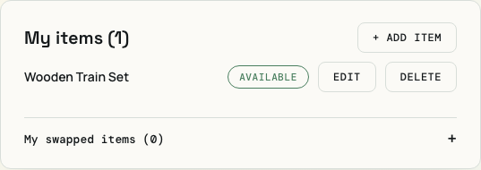
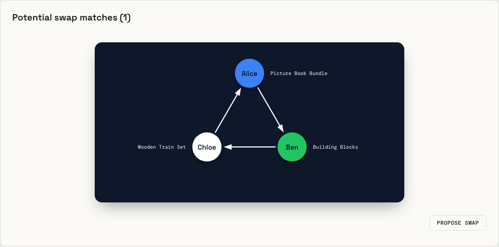
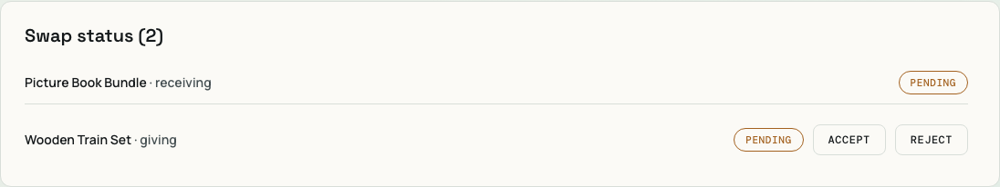
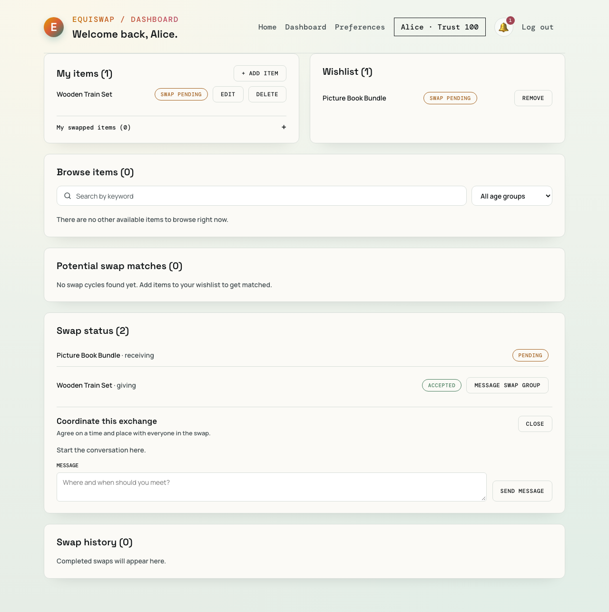
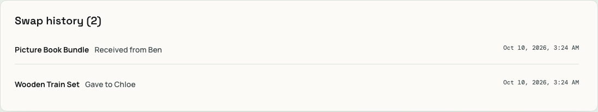

What is EquiSwap?
Children outgrow toys and books quickly. Swapping is a great way to pass them on, but it rarely works as a simple two-person trade: what you want is seldom held by someone who wants what you have. This is the problem of barter illiquidity.
EquiSwap lets each parent list the items they can give and a wishlist of items they would like. The system turns everyone's wishes into a graph and automatically finds multi-party swap cycles, for example:
- Alice wants Ben's item,
- Ben wants Chloe's item,
- Chloe wants Alice's item.
Nobody can trade directly with anyone, yet all three can be satisfied at once. EquiSwap proposes the cycle, and the swap goes ahead only when every participant accepts.
How it works: Tarjan's algorithm
EquiSwap models the community as a directed graph: each user is a node, and an edge
A → B means "A wants an item that B owns".
A valid swap group is a set of users who can all reach each other by following edges, that is, a strongly connected component (SCC). Tarjan's algorithm finds every SCC in a single depth-first traversal:
- Walk the graph depth-first, giving each node an index (visit order) and a low-link (the smallest index reachable from it).
- Push each visited node on a stack.
- When a node's low-link equals its own index, it is the root of an SCC, so pop the stack down to that node. Those nodes form one component.
- Components with two or more users are valid swap cycles and are offered as potential matches.
It runs in O(V + E) time, so it scales well as more parents and wishes are added.
How to use the application
The screenshots below follow a demo scenario with three parents: Alice owns a Wooden Train Set, Ben owns a Picture Book Bundle, and Chloe owns Building Blocks. Each wishes for the next person's item.
1Create an account
Open the app and choose Register. Enter your name, email and a password, then press Create account.

2Log in
Sign in with your email and password. You will be taken to your dashboard.

3Explore the dashboard
The dashboard brings everything together: your items, your wishlist, a browsable list of other parents' items, potential swap matches, swap status and swap history.

4List the items you can give
In My items, press + Add item to describe a toy or book (name, condition, optional picture). You can edit or delete items at any time.

5Build your wishlist
Use Browse items to search by keyword or age group, then press Add to wishlist on the items you would like. Your wishlist is what creates the edges in the swap graph.
6Review potential swap matches
Whenever the wishlists form a cycle, Potential swap matches shows it as a diagram. Each arrow points from the person giving an item to the person receiving it. Press Propose swap to start it.

7Accept or reject the proposal
Every participant sees the proposal in Swap status and can Accept or Reject it. The swap only completes if everyone accepts; proposals that are not answered in time expire.

8Coordinate with the group
After you accept, a group chat opens so participants can arrange a time and place to hand over the items. You also receive notifications from the bell icon.

9Complete the swap and check history
Once all participants accept, ownership of the items changes hands automatically, your trust score is updated, and the exchange appears in Swap history. Items you received are listed under My swapped items.

Run it locally
cd EquiSwap/backend pip install -r requirements.txt uvicorn app.main:app --reload # in another terminal cd EquiSwap/frontend npm ci npm run dev
The API documentation is available at http://127.0.0.1:8000/docs.